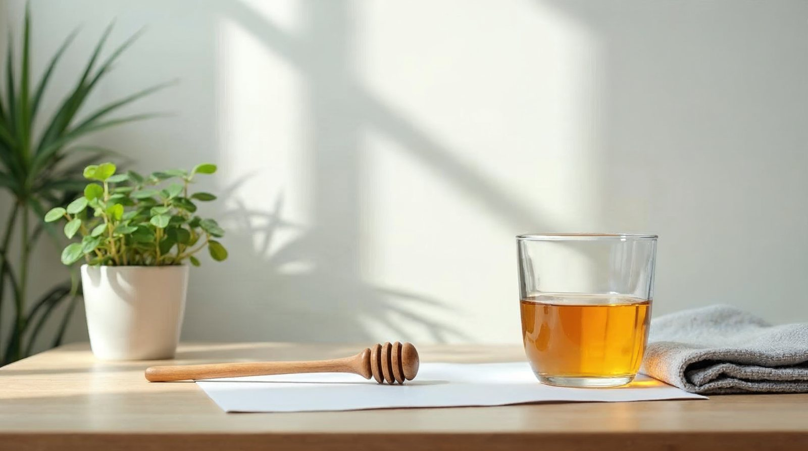
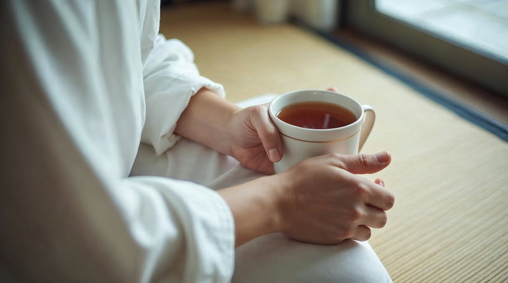
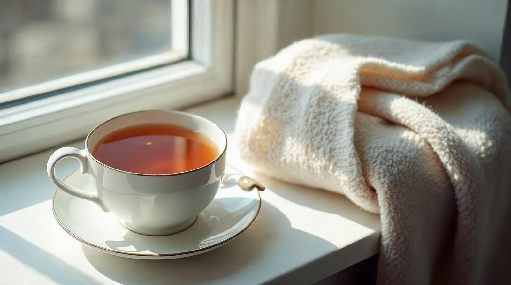
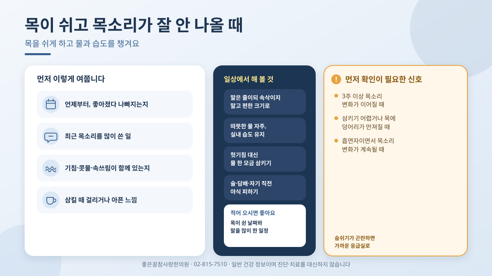

이종호 한의사 감수좋은꿈참사랑한의원 대표원장 (한의사 면허번호 19769)발행 2026-11-26 · 수정 2026-11-26
이 글의 차례
월요일 아침 첫 수업, 출석을 부르는데 목소리가 갈라집니다. 지난 주말 보충 수업까지 하고 나니 목이 따끔하더니, 오늘은 소리가 반쯤만 나옵니다. 오후에는 강의가 세 개나 더 남았습니다. 물을 마셔 보고 헛기침도 해 보지만 소리는 자꾸 힘없이 꺾입니다.
목소리를 많이 쓴 뒤 목이 쉬는 일은 흔합니다. 대부분은 며칠 목을 쉬게 하고 촉촉하게 지키면 서서히 돌아옵니다. 하지만 3주 넘게 목소리가 돌아오지 않거나, 삼키기 어렵거나, 목에 멍울이 만져진다면 이비인후과에서 목 안을 직접 확인받는 것이 먼저입니다.
강사와 교사, 상담하는 분들, 아이를 하루 종일 부르는 부모님까지, 목소리로 일하는 분들은 목이 쉬어도 쉴 수가 없습니다. 내일 수업을 미룰 수 없고, 마이크를 잡을 사람이 따로 없으니까요. 그래서 작은 목쉼을 몇 년씩 달고 지내는 분이 적지 않습니다.
진료실에서 이런 말씀을 듣습니다. 목이 쉬는 건 직업병이라 그러려니 하고 산다고요. 그런데 이야기를 나눠 보면 목소리만 지친 게 아니라 어깨와 목이 굳고, 저녁이면 기운이 다 빠지고, 잠도 얕아져 있습니다. 목소리 하나로 하루를 버텨 오신 셈입니다.
왜 목소리를 많이 쓰면 목이 쉴까요
목소리는 목 안의 성대가 아주 빠르게 맞부딪히며 떨려서 납니다. 말을 많이 하면 이 부딪힘이 하루에도 수십만 번 되풀이됩니다. 손바닥을 계속 맞부딪히면 붉어지고 붓듯, 성대도 오래 쓰면 붓고 거칠어집니다. 그러면 소리가 갈라지고 쉽게 꺾입니다.
큰 소리로 오래 말할수록, 시끄러운 곳에서 소리를 높일수록 부담은 커집니다. 넓은 강의실 뒷자리까지 목소리를 보내려 애쓰거나, 아이들 소리를 넘어서려고 소리를 지르면 성대는 더 세게 부딪힙니다.
건조한 공기도 한몫합니다. 성대 표면이 촉촉해야 부드럽게 떨리는데, 난방과 냉방으로 마른 강의실에서는 점막이 쉽게 마릅니다. 입으로 숨을 쉬며 말하면 더 그렇습니다. 커피를 여러 잔 마시고 물은 거의 마시지 않는 날도 목은 마르기 쉽습니다.
자세와 숨도 중요합니다. 고개를 앞으로 빼고 어깨에 힘을 준 채 말하면 숨이 얕아지고, 모자란 힘을 목으로 짜내게 됩니다. 판서를 하느라 칠판을 향해 고개를 든 채 말하는 시간이 길면 목과 어깨는 더 굳습니다.
노량진처럼 강의가 몰려 있는 학원가에서는 하루 서너 개 강의를 연달아 하고, 저녁에는 질문을 받고 상담까지 하는 분이 많습니다. 목이 쉴 틈 없이 하루가 이어지는 셈입니다. 목이 쉬는 횟수보다, 쉬고 나서 회복되는 데 걸리는 날이 점점 길어지는지를 눈여겨보세요. 그 날수가 늘고 있다면 목이 보내는 신호로 받아들이셔도 좋습니다.
쉰 목소리를 나눠 보는 기준
쉰 목소리라고 다 같은 원인은 아닙니다. 아래는 진단이 아니라, 어디서 먼저 확인받을지 정하는 데 쓰는 길잡이입니다.
많이 쓴 뒤 생긴 목쉼
강의나 행사, 응원처럼 목을 많이 쓴 다음 날 생기고, 쉬면 며칠 사이 나아지는 경우입니다. 다만 같은 일이 자주 되풀이되면 성대에 굳은살 같은 결절이나 물혹이 생기기도 하니, 반복된다면 이비인후과에서 한 번 확인받아 보시길 권합니다.
감기 뒤에 온 목쉼
목이 아프고 열이나 콧물, 기침이 함께 왔다가 목소리가 잠기는 경우입니다. 감기가 나으며 대개 1~2주 안에 돌아옵니다. 감기 기운이 있는 동안 목을 무리하게 쓰면 회복이 더뎌지기 쉽습니다.
아침에 유독 심한 목쉼
자고 일어나면 목소리가 잠기고 칼칼하다가 낮에는 조금 나아진다면, 밤사이 위산이 목 쪽으로 올라오거나 입을 벌리고 자서 목이 마른 경우를 떠올려 봅니다. 늦은 야식, 속쓰림, 신물이 같이 있는지 살핍니다.
아침 목마름은 자고 일어나면 입이 바짝 마르고 목이 칼칼할 때는 어떻게 살피나요?에 따로 정리해 두었습니다.
이유 없이 오래가는 목쉼
목을 많이 쓰지도 않았는데 목소리가 변하고 3주 넘게 이어진다면, 특히 담배를 피우시는 분이라면 지체하지 말고 이비인후과 진료를 받으셔야 합니다. 목에 멍울이 만져지거나 갑상선 쪽이 부어 보일 때도 마찬가지입니다.
자주 하는 오해
"목이 쉬었으니 뜨거운 차로 목을 지져야 한다"고 생각하는 분이 있습니다. 너무 뜨거운 음료는 오히려 목 점막을 자극할 수 있습니다. 미지근한 물을 자주 나눠 마시는 편이 목에 부담이 덜합니다.
"쉰 목소리는 원래 직업병이니 참으면 된다"는 생각도 조심스럽게 내려놓으셨으면 합니다. 같은 목쉼이 자꾸 되풀이되면 성대에 굳은 자리가 생기기도 하고, 그때는 말하는 습관을 바꾸는 데 시간이 더 걸립니다. 일찍 확인받는 것이 목을 오래 쓰는 길입니다.
"목소리가 안 나올 때는 귓속말로 하면 괜찮다"는 것도 흔한 오해입니다. 앞에서 말씀드렸듯 속삭임은 목에 힘을 더 들게 합니다. 작게라도 편한 목소리로 말하는 편이 목에 무리가 덜 갑니다.
먼저 이렇게 여쭙니다
목소리가 쉬어 말하기 힘드시면 짧게 답하셔도, 적어 오셔도 됩니다.
- 언제부터 쉬었나요? 좋아졌다 나빠졌다 하나요, 계속 그대로인가요?
- 하루에 말하는 시간은 얼마나 되나요? 마이크를 쓰시나요?
- 하루 중 언제 가장 나쁜가요? 아침인가요, 수업이 끝난 저녁인가요?
- 기침, 콧물, 속쓰림, 신물이 함께 있나요?
- 삼킬 때 걸리거나 아프고, 목에 멍울이 만져지지는 않나요?
- 담배와 술, 하루에 마시는 물과 커피는 어느 정도인가요?

일상에서 먼저 해 볼 수 있는 것
목이 쉬었을 때 가장 먼저 할 일은 목을 쉬게 하는 것입니다. 말을 아예 끊기 어려운 직업이라면, 쓰는 방식을 바꾸는 것만으로도 목의 짐이 줄어듭니다.
- 말하는 양을 줄이되 속삭이지 말고, 편한 크기로 짧게 말하기
- 강의와 수업에는 가능하면 마이크를 쓰고, 큰 소리를 내야 할 때는 손뼉이나 종으로 대신하기
- 미지근한 물을 수업 사이마다 몇 모금씩 마시고, 실내 습도를 챙기기
- 헛기침 대신 물 한 모금 삼키기. 헛기침도 성대를 세게 부딪히게 합니다
- 말하기 전에 어깨를 한 번 내리고 숨을 배까지 채운 뒤 내쉬는 숨에 말하기
- 술과 담배, 자기 직전 야식은 피하기
속삭이면 목이 덜 쓰일 것 같지만, 실제로는 목에 힘이 들어가 오히려 부담이 되는 경우가 많습니다. 작게, 편하게, 짧게. 이 세 가지만 기억해 두셔도 좋습니다.
목캔디나 차에 기대기보다 미지근한 물이 기본입니다. 박하처럼 시원한 맛은 잠깐 편하게 느껴져도 목을 더 마르게 할 수 있습니다.
강의실 공기가 건조하다면 노량진 학원 강의실 냉난방 속에서 목이 칼칼하고 코가 마를 때는 어떻게 하나요?도 함께 보셔도 좋습니다.
강사·교사라면 이것도 함께 봅니다
말로 일하는 분들은 목소리만 따로 쉬게 하기가 어렵습니다. 그래서 하루 일정 안에서 목의 숨 돌릴 틈을 만드는 쪽으로 이야기합니다.
예를 들어 하루 네다섯 시간 연달아 강의하는 강사라면, 강의 사이 쉬는 시간에는 휴대폰 통화도 줄이고 물부터 마시도록 권합니다. 수업 중 학생들이 스스로 풀어 보는 시간을 넣으면 목도 함께 쉽니다.
예를 들어 판서를 많이 하는 교사라면, 칠판을 보며 말하는 시간을 줄이고 학생 쪽으로 돌아서서 말하도록 권합니다. 고개를 들고 어깨를 올린 채 말하면 목과 어깨가 같이 굳기 때문입니다.
서서 수업하며 목과 어깨가 함께 지칠 때는 서서 수업하는 교사는 목과 어깨, 목소리가 함께 지칠 때 어떻게 살피나요?를 참고해 주세요.
예를 들어 콜센터나 상담 일처럼 헤드셋을 쓰고 하루 종일 말하는 분이라면, 마이크가 있어도 목에 힘을 주고 또렷하게 말하려다 지치기 쉽습니다. 헤드셋 소리를 조금 키우면 내 목소리도 덜 높아집니다. 통화 사이 물 한 모금을 습관으로 만들어 보세요.
방학이나 연휴처럼 목을 쉴 수 있는 시기에도 목소리가 돌아오지 않는다면, 그때는 피로만의 문제가 아닐 수 있으니 이비인후과 확인을 미루지 마세요.

목소리를 아끼는 하루 흐름
목은 하루 안에서도 아껴 쓸 수 있습니다. 예를 들면 이런 흐름입니다.
아침에는 일어나자마자 큰 소리를 내기보다 미지근한 물 한 컵을 먼저 마시고, 콧노래처럼 입을 다문 채 "음" 소리를 가볍게 내며 목을 깨웁니다. 첫 수업 전 몇 분은 말없이 숨을 고르는 시간으로 둡니다.
수업과 강의 사이에는 물을 몇 모금 마시고, 말하지 않는 시간을 단 5분이라도 만듭니다. 점심시간에 동료들과 시끄러운 식당에서 큰 소리로 이야기하는 것도 생각보다 목을 많이 씁니다.
퇴근 뒤에는 목을 쉬게 하는 시간이 필요합니다. 긴 통화는 문자로 바꾸고, 노래방이나 시끄러운 술자리는 목이 쉰 주에는 미루세요. 저녁 늦게 먹는 야식과 술은 밤사이 목을 더 마르게 하고, 위산이 올라오게 하기도 합니다.
목이 쉬는 날에는 몸도 함께 지쳐 있습니다
목이 자주 쉬는 분들과 이야기를 나눠 보면, 목소리만 지친 경우는 드뭅니다. 하루 종일 말하고 나면 저녁에 기운이 다 빠지고, 밥맛이 없거나 늦게 몰아 먹고, 잠은 얕고 새벽에 깹니다.
한의학에서는 목소리를 숨의 힘과 이어서 봅니다. 기운이 떨어지면 소리를 받쳐 주는 숨도 얕아지고, 모자란 힘을 목으로 짜내게 됩니다. 그래서 저는 목이 쉬었다는 분께도 잠과 식사, 피로를 꼭 함께 여쭙습니다.
하루 종일 말하고 지친 저녁의 이야기는 하루 종일 말하는 교사가 저녁에 기운이 빠지고 잠이 얕을 때는 어떻게 살피나요?에도 적어 두었습니다.
스스로 점검해 보세요
- 목을 많이 쓴 다음 날 소리가 갈라지거나 꺾인다
- 저녁이 되면 목소리가 낮아지고 말하는 것 자체가 힘들다
- 말을 할 때 목과 어깨에 힘이 들어가고, 끝나면 뒷목이 뻐근하다
- 헛기침을 자주 하고, 하루에 마시는 물이 두세 컵이 안 된다
- 아침에 목이 잠기고 속쓰림이나 신물이 있다
- 방학이나 연휴에 쉬어도 목소리가 잘 돌아오지 않는다
해당하는 줄에 표시해 오시면 그 줄부터 이야기를 시작하겠습니다. 마지막 줄에 해당한다면 진료 전에 이비인후과 확인을 먼저 받아 두시면 좋습니다.

한의원에서 함께 살필 수 있는 경우
- 이비인후과에서 큰 이상은 없다고 들었지만 목이 자주 쉬고 쉽게 지치는 경우
- 강의나 상담처럼 말을 많이 하는 일로 목·어깨가 늘 굳어 있는 경우
- 목소리가 잠기면서 잠이 얕고 저녁이면 기운이 다 빠지는 경우
- 속쓰림과 함께 아침마다 목이 잠기는 경우
좋은꿈참사랑한의원에 처음 오시면 먼저 목소리가 쉰 기간과 위험 신호가 없는지, 이비인후과 진료를 받으셨는지 확인합니다. 그다음 양손을 내어 달라고 말씀드리고 맥을 짚습니다. 맥을 짚으며 잠과 소화, 대변, 하루에 마시는 물의 양을 여쭙고, 필요하다고 판단될 때 혀도 봅니다.
이어서 목 앞과 옆, 어깨와 등 위쪽을 손으로 살펴 굳은 곳을 찾고, 말할 때 숨을 어떻게 쓰는지도 봅니다. 이렇게 살핀 내용을 바탕으로 침이나 한약 상담 가운데 지금 상태에 맞는 방법을 함께 정합니다. 목 안을 직접 봐야 하는 경우에는 이비인후과 확인을 먼저 안내합니다.
다시 오시면 지난번 이후 목소리가 가장 나빴던 날과 그날 말한 시간부터 이어서 여쭙습니다.
이렇게 기록해 오시면 상담이 쉬워집니다
- 목이 쉰 날짜와 그 전후로 말을 많이 한 일정(강의 시간, 행사)
- 하루 중 목소리가 가장 나쁜 때와 가장 나은 때
- 함께 있는 증상(기침, 속쓰림, 신물, 삼킬 때 불편)
- 하루에 마신 물과 커피의 양, 잠든 시각
- 이비인후과 진료를 받았다면 들은 내용과 받은 약
목소리를 휴대폰으로 같은 문장을 읽어 짧게 녹음해 두시면, 날마다 어떻게 달라지는지 비교하기 좋습니다.
이런 증상은 먼저 확인이 필요합니다
- 3주 넘게 목소리 변화가 이어지는 경우
- 삼키기 어렵거나 삼킬 때 아프고, 목에 멍울이 만져지는 경우
이런 신호가 있으면 한의원보다 가까운 병원이나 응급실을 먼저 찾으세요.
목소리는 매일 쓰는 도구라서, 아프다고 내려놓기가 참 어렵습니다. 그 목소리로 오늘도 누군가를 가르치고 설명하셨을 겁니다. 목이 조금 덜 지치는 하루를 함께 찾아보겠습니다. 다음에 오시면 지난번 이후 목소리가 가장 나빴던 날이 언제였는지부터 여쭙겠습니다.

여쭙는 것
- 언제부터 쉬었나요? 좋아졌다 나빠졌다 하나요, 계속 그대로인가요?
- 하루에 말하는 시간은 얼마나 되나요? 마이크를 쓰시나요?
- 하루 중 언제 가장 나쁜가요? 아침인가요, 수업이 끝난 저녁인가요?
생활에서 해 볼 것
- 말하는 양을 줄이되 속삭이지 말고, 편한 크기로 짧게 말하기
- 강의와 수업에는 가능하면 마이크를 쓰고, 큰 소리를 내야 할 때는 손뼉이나 종으로…
- 미지근한 물을 수업 사이마다 몇 모금씩 마시고, 실내 습도를 챙기기
한의원에서 함께 살필 것
- 이비인후과에서 큰 이상은 없다고 들었지만 목이 자주 쉬고 쉽게 지치는 경우
- 강의나 상담처럼 말을 많이 하는 일로 목·어깨가 늘 굳어 있는 경우
- 목소리가 잠기면서 잠이 얕고 저녁이면 기운이 다 빠지는 경우
먼저 확인이 필요한 신호
- 3주 넘게 목소리 변화가 이어지는 경우
- 삼키기 어렵거나 삼킬 때 아프고, 목에 멍울이 만져지는 경우
한눈에 보는 표
| 구분 | 핵심 |
|---|---|
| 여쭙는 것 | 언제부터 쉬었나요? 좋아졌다 나빠졌다 하나요, 계속 그대로인가요? 하루에 말하는 시간은 얼마나 되나요? 마이크를 쓰시나요? |
| 생활에서 해 볼 것 | 말하는 양을 줄이되 속삭이지 말고, 편한 크기로 짧게 말하기 강의와 수업에는 가능하면 마이크를 쓰고, 큰 소리를 내야 할 때는 손뼉이나 종으로 대신하기 |
| 한의원에서 함께 살필 것 | 이비인후과에서 큰 이상은 없다고 들었지만 목이 자주 쉬고 쉽게 지치는 경우 강의나 상담처럼 말을 많이 하는 일로 목·어깨가 늘 굳어 있는 경우 |
| 먼저 확인이 필요한 신호 | 3주 넘게 목소리 변화가 이어지는 경우 삼키기 어렵거나 삼킬 때 아프고, 목에 멍울이 만져지는 경우 |
자주 묻는 질문
목이 쉬면 아예 말을 하지 않아야 하나요?
꼭 필요한 말은 편한 크기로 짧게 하시고, 속삭이지 않는 편이 목에 부담이 덜합니다. 며칠 말을 줄여도 돌아오지 않거나 3주 넘게 이어지면 이비인후과에서 확인해 보세요.
한의원에서 목 안을 볼 수 있나요?
성대는 후두 내시경으로 직접 봐야 하므로 이비인후과 확인이 먼저입니다. 한의원에서는 목소리를 쓰는 습관과 목·어깨의 긴장, 잠과 소화를 함께 살핍니다.
목에 좋은 차가 있나요?
미지근한 물을 자주 마시는 것이 기본입니다. 특정 차나 식품에 기대기보다 목을 쉬게 하고 촉촉하게 지키는 것이 먼저입니다.
아침마다 목이 잠기는 건 왜 그런가요?
밤사이 입을 벌리고 자서 목이 마르거나, 위산이 목 쪽으로 올라오는 경우가 있습니다. 늦은 야식과 속쓰림이 있는지 함께 살펴봅니다.
좋은꿈참사랑한의원은 재진 때 지난번 이야기부터 이어서 여쭙니다. 진료시간과 예약은 오시는 길에서 확인하세요.
어디서 상담받을 수 있나요?
좋은꿈참사랑한의원은 서울 동작구 만양로2길 2 신성빌딩 3층·5층(서울 동작구 상도동, 7호선 상도역 3번 출구 근처)에 있습니다. 한의사 3명(이종호 대표원장, 조영기 수석진료원장, 정원영 진료원장)이 진료합니다. 진료시간은 평일 09:30~20:00(점심 13:00~14:00), 토·일·공휴일 09:30~15:00이며, 방문 전 전화로 확인을 권합니다. 예약은 네이버 예약, 카카오톡 상담, 전화 02-815-7510로 받습니다.
이 글은 일반적인 건강 정보이며 개인의 진단이나 치료를 대신하지 않습니다. 증상이 있거나 복용 중인 약이 있다면 진료를 통해 확인하세요. 치료 효과는 개인마다 다를 수 있습니다.
작성 기준: 일반적으로 알려져 있는 건강 정보를 참고해 정리했습니다(대표원장 감수). 증상 기록은 1~2주 동안 하루 1회, 비슷한 시간에 적어 오시면 지난 상태와 비교하기 쉽습니다.